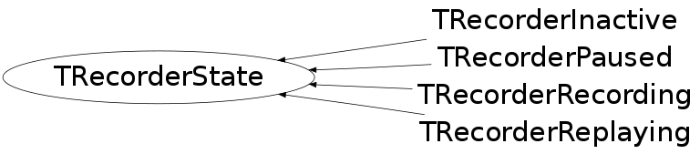

class TRecorderState
ROOT EVENT RECORDING SYSTEM TRecorder class provides interface for recording and replaying events in ROOT. Recorded events are: - Commands typed by user in commandline ('new TCanvas') - GUI events (mouse movement, button clicks, ...) All the recorded events from one session are stored in one TFile and can be replayed again anytime. Recording 1] To start recording TRecorder r(const char *filename, "NEW") TRecorder r(const char *filename, "RECREATE") or: TRecorder *recorder = new TRecorder; recorder->Start(const char *filename, ...) -filename Name of ROOT file in which to save recorded events. 2] To stop recording recorder->Stop() IMPORTANT: State capturing is part of recording. It means that if you want to record events for some object (window), creation of this object must be also recorded. Example: t = new TRecorder(); // Create a new recorder t->Start("logfile.root"); // ! Start recording first c = new TCanvas(); // ! Then, create an object c->Dump(); // Work with that object t->Stop(); // Stop recording It is strongly recommended to start recording with empty ROOT environment, at least with no previously created ROOT GUI. This ensures that only events for well known windows are stored. Events for windows, which were not created during recording, cannot be replayed. Replaying 1] To start replaying TRecorder r(const char *filename) TRecorder r(const char *filename, "READ") or: TRecorder *recorder = new TRecorder; recorder->Replay(const char *filename, Bool_t showMouseCursor = kTRUE); -filename A name of file with recorded events previously created with TRecorder::Start -showMouseCursor If kTRUE, mouse cursor is replayed as well. In that case it is not recommended to use mouse during replaying. In general, it is not recommended to use mouse to change positions and states of ROOT windows during replaying. IMPORTANT: The state of ROOT environment before replaying of some events must be exactly the same as before recording them. Therefore it is strongly recommended to start both recording and replaying with empty ROOT environment. 2] To pause replaying recorder->Pause() Replaying is stopped until recorder->Resume() is called. 3] To resume paused replaying recorder->Resume() Resumes previously stopped replaying. 4] To stop replaying before its end recorder->Stop()
Function Members (Methods)
This is an abstract class, constructors will not be documented.
Look at the header to check for available constructors.
public:
| virtual | ~TRecorderState() |
| static TClass* | Class() |
| virtual TRecorder::ERecorderState | GetState() const |
| virtual TClass* | IsA() const |
| virtual void | ListCmd(const char*) |
| virtual void | ListGui(const char*) |
| TRecorderState& | operator=(const TRecorderState&) |
| virtual void | Pause(TRecorder*) |
| virtual void | PrevCanvases(const char*, Option_t*) |
| virtual Bool_t | Replay(TRecorder*, const char*, Bool_t, TRecorder::EReplayModes) |
| virtual void | ReplayStop(TRecorder*) |
| virtual void | Resume(TRecorder*) |
| virtual void | ShowMembers(TMemberInspector& insp) |
| virtual void | Start(TRecorder*, const char*, Option_t*, Window_t*, Int_t) |
| virtual void | Stop(TRecorder*, Bool_t) |
| virtual void | Streamer(TBuffer& b) |
| void | StreamerNVirtual(TBuffer& b) |
protected:
| void | ChangeState(TRecorder* r, TRecorderState* s, Bool_t deletePreviousState) |
Class Charts
{kind=link}
{kind=link}
{kind=link}
{kind=link}

Function documentation
void ChangeState(TRecorderState *newstate, Bool_t deletePreviousState = kTRUE)
Changes state to the new one. See class documentation for information about state changing.
void Start(const char *filename, Option_t *option = "RECREATE", Window_t *w = 0, Int_t winCount = 0)
Starts recording of events to the given file
Bool_t Replay(const char *filename, Bool_t showMouseCursor = kTRUE, TRecorder::EReplayModes mode = kRealtime)
Replays recorded events from given file